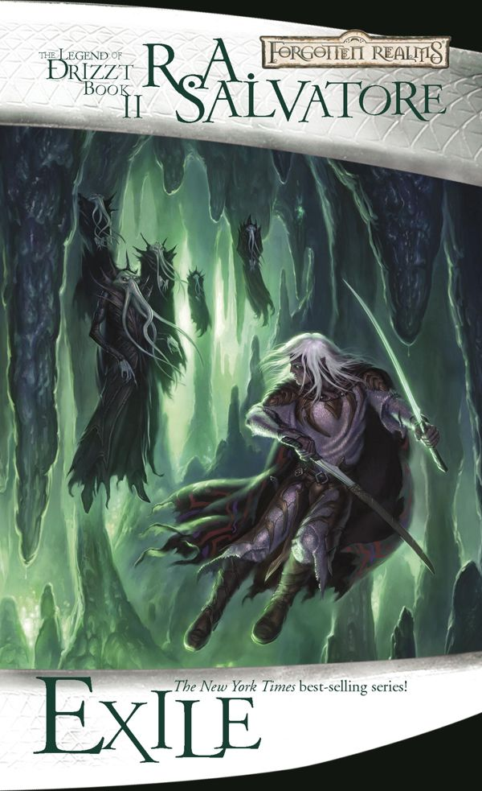

Exile
by R. A. Salvatore, 2006
- Part of
- The Legend of Drizzt (#2)
- Description
- Dark elf Drizzt Do’Urden fights for his survival in the labyrinthine tunnels of the Underdark
Ten years have passed since we last saw Drizzt Do’Urden and his magical feline companion, Guenhwyvar—and much has changed. Exiled from Menzoberranzan, the city of his childhood and the hub of drow society, Drizzt now wanders the subterranean maze of the Underdark in search of a new home.
As I became a creature of the empty tunnels, survival became easier and more difficult all at once. I gained in the physical skills and experience necessary to live on. I could defeat almost anything that wandered into my chosen domain. It did not take me long, however, to discover one nemesis that I could neither defeat nor flee. It followed me wherever I went—indeed, the farther I ran, the more it closed in around me. My enemy was solitude, the interminable, incessant silence of hushed corridors.
But loneliness is not the only thing that preys on Drizzt: His drow enemies, including his own siblings, would like nothing more than to see him dead. They begin their own search of the Underdark tunnels with murder on their minds, forcing Drizzt to watch his back at every turn.
Exile is the second book in the Dark Elf Trilogy and the Legend of Drizzt series. - Publication
- Wizards of the Coast
- Publication date
- March 07, 2006
- ISBN
- 9780786939831, 0786939834
- Call number
- 813.54